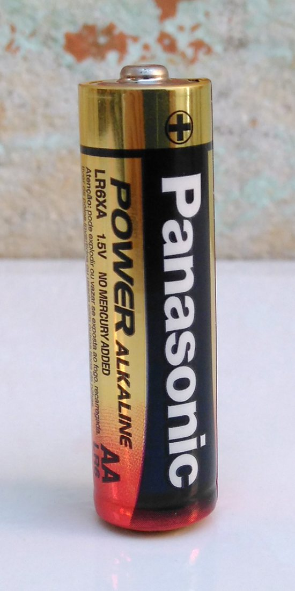
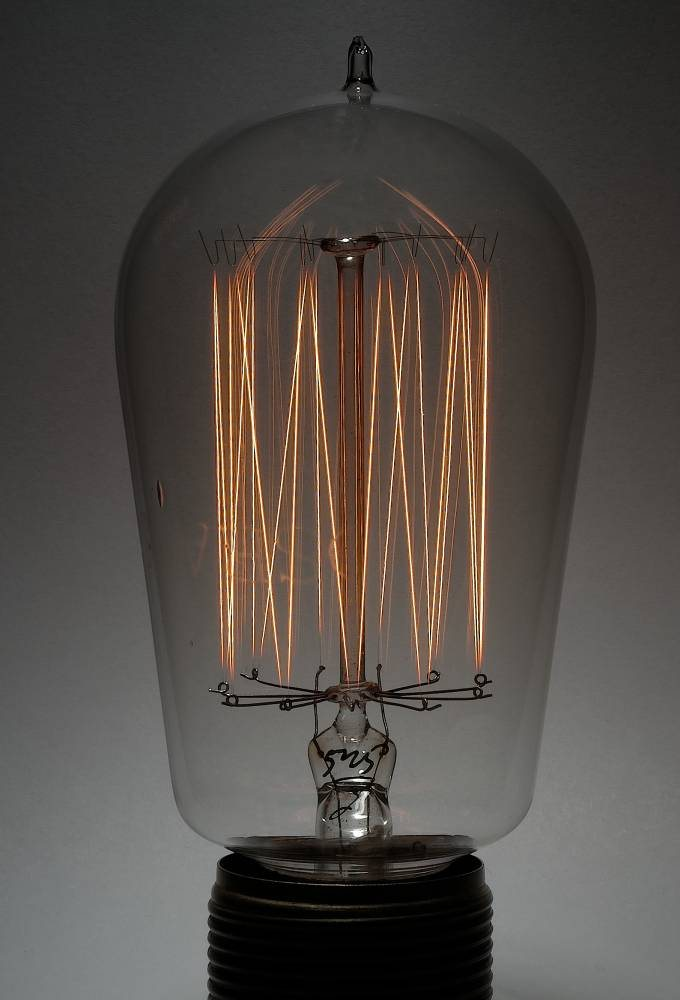
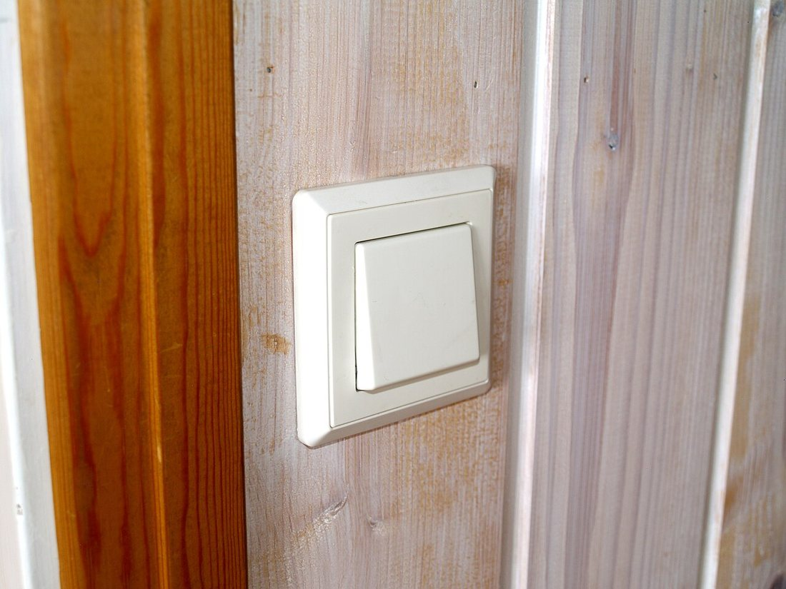
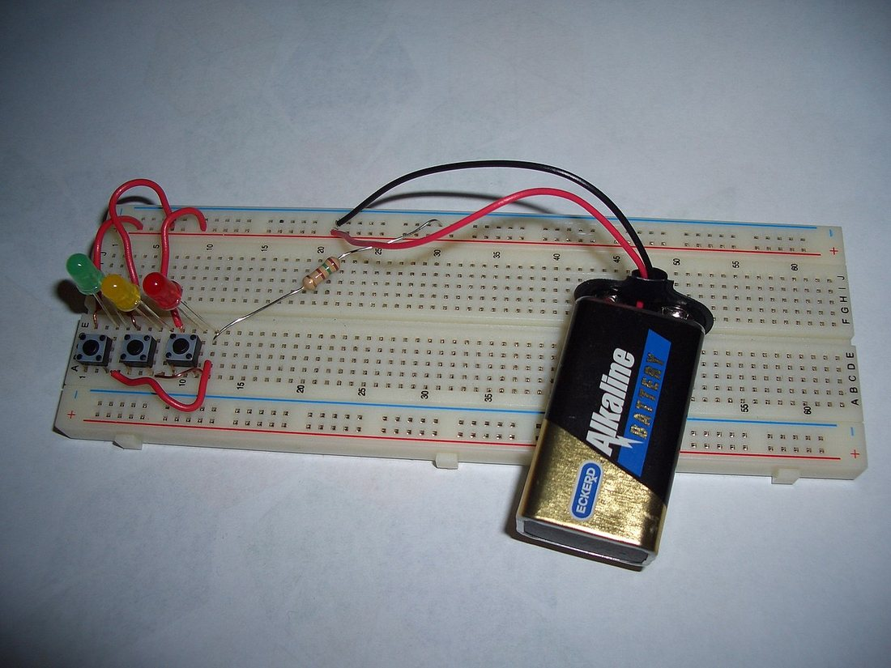

Көркем еңбек (ұлдар) · 4-бөлім · Машина және электротехника Art & Craft (Boys) · Section 4 · Machines & Electrics Художественный труд (мальчики) · Раздел 4 · Машины и электротехника
⚡ Электротехника негіздері: тізбек және сұлба
⚡ Basics of Electrics: Circuit and Diagram
⚡ Основы электротехники: цепь и схема
Ток қалай жүреді, тізбек неден құралады және оны сұлбамен қалай белгілейді. How current flows, what a circuit is made of, and how we draw it as a diagram. Как течёт ток, из чего состоит цепь и как её изображают схемой.
Электр тізбегі — электр тогы жүретін тұйық жол. Онда үш міндетті бөлік болады: қорек көзі (батарея, аккумулятор), тұтынушы (шам, қозғалтқыш, қыздырғыш) және оларды жалғайтын сымдар. Көбіне тізбекке кілт (ажыратқыш) қосылады — ол жолды ашып-жабады. Ток тек тізбек тұйық болғанда ғана жүреді: бір жер ажыраса — ток тоқтайды. Инженерлер тізбекті сурет арқылы емес, шартты белгілерден тұратын электр сұлбасымен бейнелейді — ол қысқа, түсінікті әрі бүкіл әлемге ортақ «тіл». An electric circuit is a closed path along which electric current flows. It has three essential parts: a source (battery, accumulator), a load (lamp, motor, heater) and the wires that join them. Usually a switch is added to open and close the path. Current flows only when the circuit is closed: break it at any point and the current stops. Engineers do not draw a picture of every part — they use an electric diagram made of standard symbols. It is short, clear and is a single "language" understood worldwide. Электрическая цепь — это замкнутый путь, по которому течёт электрический ток. В ней есть три обязательные части: источник (батарея, аккумулятор), потребитель (лампа, двигатель, нагреватель) и соединяющие их провода. Обычно в цепь добавляют ключ (выключатель), который размыкает и замыкает путь. Ток идёт, только когда цепь замкнута: разорви её в любом месте — и ток прекратится. Инженеры рисуют не картинку каждой детали, а электрическую схему из условных обозначений — это коротко, понятно и едино во всём мире.
Тізбектің бөліктері The parts of a circuit Из чего состоит цепь
🔍 Үлкейту үшін суретті басыңыз. 🔍 Tap a photo to enlarge it. 🔍 Нажмите на фото, чтобы увеличить.

🔋 Қорек көзіSourceИсточник
Энергия береді. Полюстері «+» және «−». Маркада кернеу жазылады: 1,5 В.Supplies energy. Its poles are "+" and "−"; the label shows the voltage: 1.5 V.Даёт энергию. Полюса «+» и «−»; на корпусе указано напряжение: 1,5 В.

💡 ТұтынушыLoadПотребитель
Энергияны пайдалы жұмысқа айналдырады. Шам — жарыққа, қозғалтқыш — қозғалысқа.Turns energy into useful work — a lamp into light, a motor into motion.Превращает энергию в полезную работу: лампа — в свет, двигатель — в движение.

🔘 Кілт (ажыратқыш)SwitchКлюч (выключатель)
Тізбекті қолмен ашып-жабады — токты басқарудың қарапайым жолы.Opens and closes the circuit by hand — the simplest way to control current.Размыкает и замыкает цепь вручную — простейший способ управлять током.
Нақты тізбек және оның сұлбасы A real circuit and its diagram Реальная цепь и её схема

Сол сурет — шартты белгілерменThe same circuit — in standard symbolsТа же цепь — условными обозначениями
📐 Сұлба неге ыңғайлы?Why is a diagram handy?Чем удобна схема? Ол бөлшектердің көрінісін емес, олардың жалғануын көрсетеді. Сондықтан кез келген елдің инженері оны бірден оқиды әрі тура солай құрастыра алады.It shows how parts are connected, not how they look. So an engineer in any country can read it at a glance and build the circuit exactly the same way.Она показывает не внешний вид деталей, а их соединение. Поэтому инженер любой страны сразу её прочитает и соберёт цепь точно так же.
Негізгі шартты белгілер Basic circuit symbols Основные условные обозначения
| Обозначение | Элемент | Что делает |
|---|---|---|
| Источник (батарея) | Создаёт напряжение, «толкает» ток. Длинная черта — «+». | |
| Лампа | Потребитель: превращает ток в свет и тепло. | |
| Ключ (выключатель) | Размыкает или замыкает цепь. | |
| Резистор | Сопротивление: ограничивает силу тока. | |
| Провод | Соединяет элементы, проводит ток. |
| Белгі | Элемент | Қызметі |
|---|---|---|
| Қорек көзі (батарея) | Кернеу тудырады, токты «итереді». Ұзын сызық — «+». | |
| Шам | Тұтынушы: токты жарық пен жылуға айналдырады. | |
| Кілт (ажыратқыш) | Тізбекті ашады не жабады. | |
| Резистор | Кедергі: ток күшін шектейді. | |
| Сым | Элементтерді жалғайды, токты өткізеді. |
| Symbol | Element | What it does |
|---|---|---|
| Source (battery) | Creates voltage and "pushes" the current. Long line = "+". | |
| Lamp | A load: turns current into light and heat. | |
| Switch | Opens or closes the circuit. | |
| Resistor | Resistance: limits the strength of the current. | |
| Wire | Connects the elements and carries the current. |
Тізбектей және параллель жалғау Series and parallel connection Последовательное и параллельное соединение
ТізбектейSeriesПоследовательное
Бір жол: ток барлығынан кезекпен өтеді.One path: current passes through each in turn.Один путь: ток идёт через все по очереди.
ПараллельParallelПараллельное
Бірнеше жол: әрқайсысының өз тармағы бар.Several paths: each has its own branch.Несколько путей: у каждого своя ветвь.
| Признак | Последовательное | Параллельное |
|---|---|---|
| Путь тока | Один общий путь | Несколько ветвей |
| Если одна лампа перегорит | Гаснут все | Остальные горят |
| Яркость ламп | Тусклее (делят напряжение) | Полная (у каждой своё напряжение) |
| Где встречается | Гирлянда старого типа | Розетки и лампы в доме |
| Белгісі | Тізбектей | Параллель |
|---|---|---|
| Ток жолы | Бір ортақ жол | Бірнеше тармақ |
| Бір шам күйсе | Бәрі сөнеді | Қалғаны жанып тұрады |
| Шамдардың жарығы | Әлсіздеу (кернеуді бөліседі) | Толық (әрқайсысында өз кернеуі) |
| Қайда кездеседі | Ескі түрдегі гирлянда | Үйдегі розетка мен шамдар |
| Feature | Series | Parallel |
|---|---|---|
| Current path | One shared path | Several branches |
| If one lamp burns out | All go dark | The rest keep glowing |
| Brightness of lamps | Dimmer (they share the voltage) | Full (each gets its own voltage) |
| Where you meet it | Old-style string of lights | Sockets and lamps in a house |
Қарапайым тізбекті қалай құрастырамыз How to build a simple circuit Как собрать простую цепь
Сұлбаны оқы.Read the diagram.Прочитай схему. Қандай элементтер бар және олар қалай жалғанатынын анықта.Find out which elements are needed and how they connect.Определи, какие элементы нужны и как они соединяются.
Бөлшектерді дайында.Lay out the parts.Подготовь детали. Батарея, шам (немесе жарықдиод), кілт, сымдар. Кернеулері сәйкес болсын.Battery, lamp (or LED), switch, wires — make sure their voltages match.Батарея, лампа (или светодиод), ключ, провода. Проверь, что напряжения подходят.
«+» полюстен баста.Start from the "+" pole.Начни с полюса «+». Батареяның «+» жағынан кілтке, одан шамға, шамнан «−» полюске қарай жалға.Run a wire from "+" to the switch, then to the lamp, and back to the "−" pole.Проведи провод от «+» к ключу, затем к лампе и обратно к полюсу «−».
Жалғауларды тексер.Check the joints.Проверь соединения. Барлық түйіспе берік әрі тұйық па? Жалаңаш сымдар бір-біріне тимеуі керек.Are all contacts firm and the loop closed? Bare wires must not touch each other.Все контакты надёжны, петля замкнута? Оголённые провода не должны касаться.
Кілтті бас.Flip the switch.Включи ключ. Тізбек тұйықталады — шам жанады. Жанбаса, полюстер мен жалғауларды қайта қара.The circuit closes and the lamp lights up. If not, recheck the poles and joints.Цепь замыкается — лампа загорается. Если нет, проверь полюса и соединения.
Қауіпсіздік ережелері Safety rules Правила безопасности
Тек батареямен жұмыс істеWork only with batteriesРаботай только с батарейками
Сабақта төмен кернеулі қорек (батарея) қолдан. 220 В розеткаға ешқашан тиме.In class use low-voltage sources (batteries). Never touch a 220 V socket.На уроке используй источники низкого напряжения. Никогда не лезь в розетку 220 В.
Қысқа тұйықтаудан сақтанAvoid a short circuitИзбегай короткого замыкания
«+» мен «−» тұтынушысыз тура жалғама — сым қызып, батарея бұзылады.Never join "+" and "−" without a load — the wire heats up and the battery is damaged.Не соединяй «+» и «−» без потребителя — провод нагреется, батарея испортится.
Құрғақ қолменDry hands onlyТолько сухими руками
Су ток өткізеді. Дымқыл қолмен немесе су маңында электрмен жұмыс істеме.Water conducts current. Don't work with electricity with wet hands or near water.Вода проводит ток. Не работай с электричеством мокрыми руками или у воды.
Алдымен ажыратDisconnect firstСначала отключи
Тізбекті өзгертер алдында батареяны ажырат — содан кейін ғана жұмыс істе.Disconnect the battery before changing the circuit — only then make changes.Перед изменением цепи отключи батарею — и только потом работай.
Қызуды байқаWatch for heatСледи за нагревом
Сым не элемент қызып кетсе, дереу ажырат та, мұғалімге айт.If a wire or part gets hot, disconnect at once and tell the teacher.Если провод или деталь нагрелись, сразу отключи и скажи учителю.
Мұғаліммен біргеWith the teacherВместе с учителем
Жаңа тізбекті қосар алдында оны мұғалімге тексерт.Have the teacher check a new circuit before you switch it on.Перед включением новой цепи покажи её учителю.
💡 Есте сақта 💡 Remember 💡 Запомните
Электр тогы тек тұйық тізбекте жүреді, оның негізі — қорек көзі, тұтынушы және сымдар. Сұлба — сол тізбектің шартты белгілермен жазылған тілі: оны оқи білсең, кез келген схеманы құрастыра аласың. Әрқашан қауіпсіздік ережесін сақта. Тізбекті түсін — сұлбаны оқы! Electric current flows only in a closed circuit, whose core is a source, a load and wires. A diagram is that circuit written in the language of standard symbols: learn to read it and you can build any circuit. Always follow the safety rules. Understand the circuit — read the diagram! Электрический ток течёт только в замкнутой цепи, основа которой — источник, потребитель и провода. Схема — это та же цепь, записанная языком условных обозначений: научишься её читать — соберёшь любую цепь. Всегда соблюдай правила безопасности. Пойми цепь — прочитай схему!